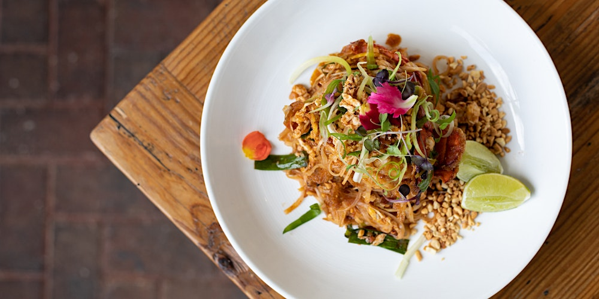

Pad Thai

Ingredients (2 servings)
- 8 oz rice noodles
- 2 tablespoons vegetable oil
- 2 cloves garlic, minced
- 1 cup firm tofu, cubed
- 2 eggs, lightly beaten
- 1 cup bean sprouts
- 2 green onions, sliced
- 1/4 cup crushed peanuts
- 1 lime, cut into wedges
Sauce:
- 3 tablespoons soy sauce
- 1 tablespoon fish sauce
- 1 tablespoon tamarind paste
- 1 tablespoon sugar
- 1/2 teaspoon red pepper flakes (optional)
Preparation
Step 1
- Cook the rice noodles according to package instructions. Drain and set aside.
Step 2
- In a small bowl, whisk together the soy sauce, fish sauce, tamarind paste, sugar, and red pepper flakes (if using). Set aside.
Step 3
- Heat vegetable oil in a wok or large skillet over medium-high heat. Add minced garlic and cook for about 30 seconds.
Step 4
- Add cubed tofu to the wok and stir-fry until it becomes golden brown.
Step 5
- Push the tofu to one side of the wok and pour the beaten eggs into the other side. Scramble the eggs until just set.
Step 6
- Add the cooked rice noodles to the wok, followed by the prepared sauce. Toss everything together to coat evenly.
Step 7
- Add bean sprouts and sliced green onions. Continue to stir-fry for an additional 2-3 minutes.
Step 8
- Remove from heat and transfer Pad Thai to serving plates.
Step 9
- Sprinkle crushed peanuts over the top and serve with lime wedges on the side.
Step 10
- Enjoy your delicious homemade Pad Thai!